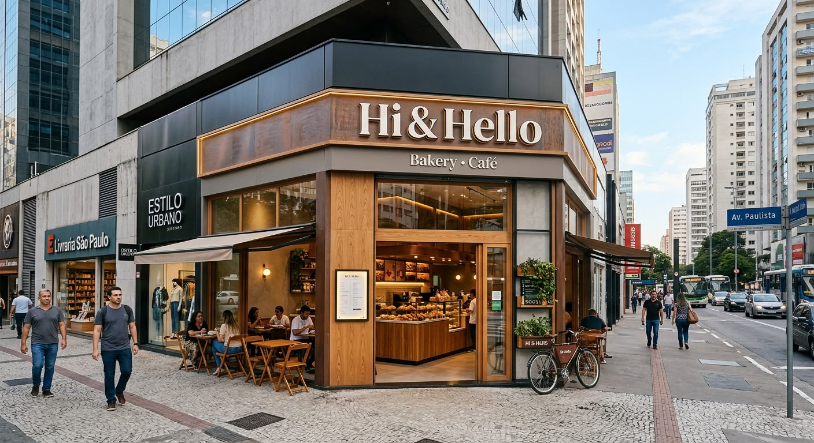

O Hi & Hello Coffee nasceu do sonho de Yago e Kauã, dois amigos que acreditavam que uma cafeteria poderia ser muito mais do que um lugar para tomar café.
Inspirados pelo charme e pela atmosfera das cafeterias francesas, criamos um espaço onde café, doces, conversas e histórias se encontram.
O nome Hi & Hello representa exatamente isso: aquele primeiro “oi” que pode dar início a uma nova amizade, uma conversa ou até uma grande história.
Cada detalhe da nossa cafeteria foi pensado para trazer um pedacinho da França e, ao mesmo tempo, criar um lugar com a nossa própria identidade.
Somos Yago e Kauã. Somos Hi & Hello. E essa é só a primeira página da nossa história. ☕🥐